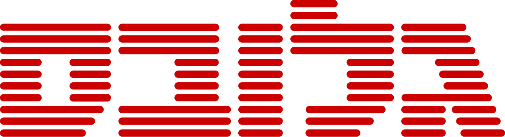
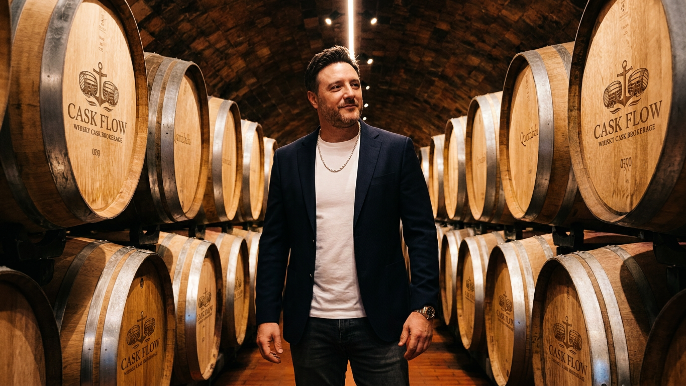
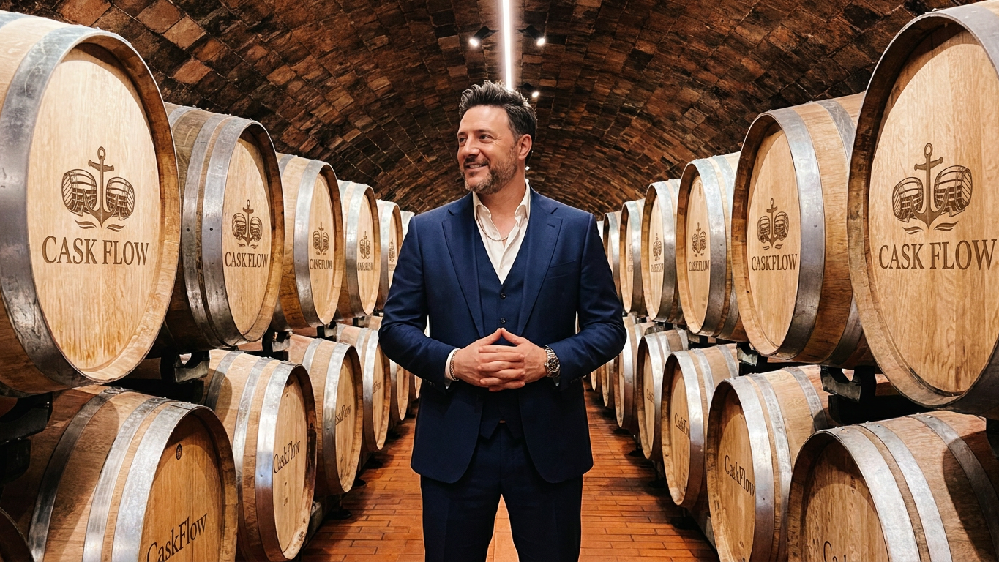
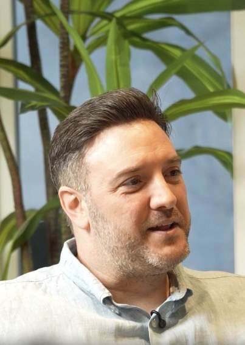
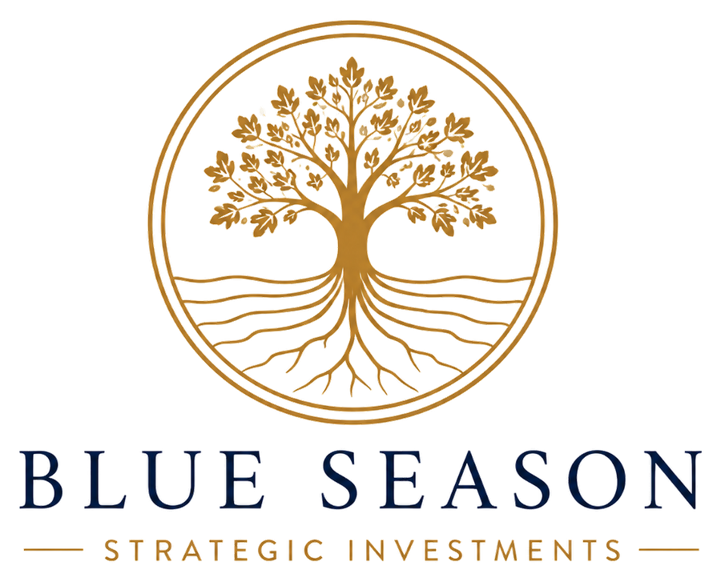
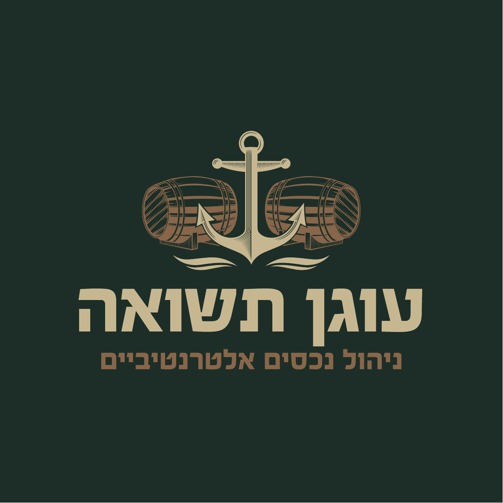
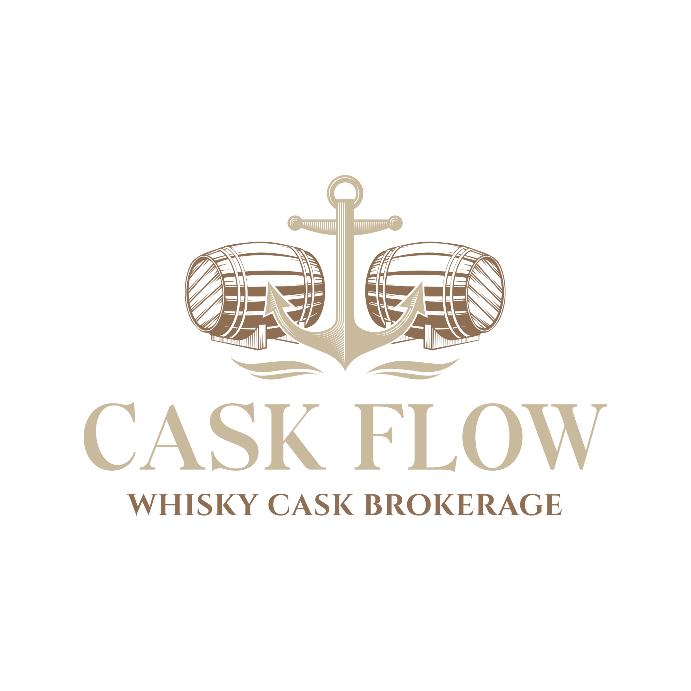
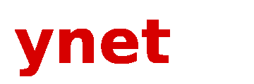

פרופיל עסקי ופעילות יזמית
סקירה העוסקת בפעילותו העסקית של גיא קובי ובמיזמים בהם היה מעורב לאורך השנים.
לקריאת הכתבהבלו סיזן אינטרנשיונל בע״מ משלבת חשיבה השקעתית אסטרטגית עם חשיפה לנכסים מוחשיים, השקעות אלטרנטיביות, חביות וויסקי פרימיום, הזדמנויות פיתוח עסקי ושותפויות ארוכות טווח.

חברת השקעות פרטית ופיתוח עסקי הפועלת מתוך תפיסה ארוכת טווח ומתמקדת ביצירת ערך בר־קיימא.

בלו סיזן אינטרנשיונל בע״מ היא חברת השקעות פרטית ופיתוח עסקי, בבעלות היזם והמשקיע גיא קובי, הפועלת בישראל ובשווקים בינלאומיים מאז שנת 2004.
במהלך למעלה משני עשורים של פעילות רציפה, הייתה החברה מעורבת בהקמה, פיתוח וליווי של מיזמים עסקיים, השקעות ושותפויות אסטרטגיות במגוון רחב של תחומים.
גישת ההשקעה של החברה מבוססת על איתור הזדמנויות בעלות יסודות חזקים, שיתוף פעולה עם גורמים מקצועיים מובילים ופיתוח ערך באמצעות ניהול אחראי, משמעת עסקית ותכנון אסטרטגי.
כיום ממשיכה בלו סיזן אינטרנשיונל בע״מ לפעול במגוון תחומי פעילות, השקעות ויוזמות עסקיות, תוך מחויבות ליציבות, צמיחה ויצירת ערך לאורך זמן.
יותר משני עשורים של פעילות עסקית, יזמות, השקעות ופיתוח הזדמנויות ארוכות טווח.
בלו סיזן אינטרנשיונל בע״מ נוסדה בישראל מתוך חזון ליצירת פעילות עסקית ארוכת טווח המבוססת על יזמות, מסחר בינלאומי ופיתוח מותגים.
החברה צברה ניסיון משמעותי בפיתוח פעילות מסחרית, ניהול מערכי שיווק והפצה, יצירת שותפויות עסקיות וניהול פעילות בינלאומית.
החברה הרחיבה את פעילותה לתחומי נדל״ן, תשתיות, השקעות אלטרנטיביות, חביות וויסקי סקוטי, טכנולוגיה ויוזמות עסקיות מגוונות.
בלו סיזן ממשיכה לבחון הזדמנויות חדשות, לפתח שותפויות אסטרטגיות ולהשקיע בתחומים שבהם ניתן לייצר ערך אמיתי ומתמשך.
בלו סיזן אינטרנשיונל בע״מ פועלת במגוון תחומים, השקעות ויוזמות עסקיות מתוך גישה של ניהול אחראי וחשיבה אסטרטגית.
השתתפות בהזדמנויות בתחום הנדל״ן המניב והמסחרי, תוך התמקדות בנכסים בעלי פוטנציאל ליצירת ערך מתמשך.
פעילות בתחומי האנרגיה, התשתיות והציוד התעשייתי, לצד בחינת הזדמנויות בעלות חשיבות אסטרטגית.
ניסיון רב שנים בתחומי הייבוא, השיווק, ההפצה והפעילות המסחרית בישראל ובשווקים בינלאומיים.
מעורבות בתחום המשקאות האיכותיים והמותגים הבינלאומיים, לרבות פעילות מסחרית, פיתוח שווקים ושיתופי פעולה.
איתור ובחינה של הזדמנויות השקעה מחוץ לאפיקים המסורתיים, תוך התמקדות בנכסים בעלי פוטנציאל ייחודי.
פעילות בתחום חביות הוויסקי הסקוטי כאפיק השקעה אלטרנטיבי המבוסס על נכסים מוחשיים ופוטנציאל השבחה.
בחינת השקעות ומעורבות ביוזמות טכנולוגיות, חברות צמיחה ומיזמים חדשניים.
שיתוף פעולה עם יזמים, משקיעים, מנהלים ובעלי מקצוע במגוון תחומי פעילות ושווקים.
העקרונות המנחים את פעילותה של בלו סיזן אינטרנשיונל בע״מ ואת גישתה ליצירת ערך לאורך זמן.
כל השקעה, שותפות או יוזמה עסקית נבחנת מתוך ראייה אסטרטגית רחבה ומחויבות ליציבות ולצמיחה מתמשכת.
אנו פועלים לאיתור הזדמנויות, פיתוח רעיונות והפיכתם לפעילות עסקית בעלת ערך ממשי.
אנו מאמינים במערכות יחסים ארוכות טווח המבוססות על אמון, מקצועיות, כבוד הדדי ומטרות משותפות.
חשיפה למגוון תחומי פעילות ואפיקי השקעה מאפשרת גמישות, יציבות ויכולת להתמודד עם שינויים.
אחריות, שקיפות, אמינות ומחויבות לסטנדרטים מקצועיים גבוהים מהווים בסיס לכל פעילות והחלטה.

יזם, משקיע ומפתח עסקים.
גיא קובי הוא יזם, משקיע ואיש עסקים בעל ניסיון של למעלה משני עשורים במגוון תחומי פעילות, השקעות ופיתוח עסקי.
מאז הקמת בלו סיזן אינטרנשיונל בע״מ בשנת 2004, היה מעורב בהקמה, פיתוח והובלה של מיזמים עסקיים, השקעות ושותפויות אסטרטגיות בישראל ובשווקים בינלאומיים.
במהלך השנים פעל כמייסד, בעל מניות, דירקטור, שותף אסטרטגי ומשקיע, תוך מעורבות בתחומי הנדל״ן, המסחר הבינלאומי, השקעות אלטרנטיביות, תשתיות, טכנולוגיה ויוזמות נוספות.
גישתו העסקית מבוססת על חשיבה ארוכת טווח, קבלת החלטות מושכלת, יצירת שותפויות איכותיות וזיהוי הזדמנויות בעלות פוטנציאל ליצירת ערך מתמשך.
לצפייה בפרופיל LinkedInמעורבות במגוון השקעות, מיזמים ושותפויות עסקיות בישראל ובעולם.
במהלך למעלה משני עשורים של פעילות עסקית, הייתה בלו סיזן אינטרנשיונל בע״מ מעורבת במגוון השקעות, מיזמים ושותפויות עסקיות בישראל ובעולם.
פעילות החברה משתרעת על פני תחומים מרכזיים, בהם נדל״ן, תשתיות, מסחר בינלאומי, השקעות אלטרנטיביות, חביות וויסקי סקוטי, טכנולוגיה ויוזמות עסקיות נוספות.

חברת השקעות פרטית ופיתוח עסקי הפועלת מאז שנת 2004.

חברה המתמקדת באפיקי השקעה אלטרנטיביים וביצירת הזדמנויות ארוכות טווח.

פלטפורמה המתמחה באיתור, רכישה, ניהול ופיתוח נכסי וויסקי סקוטי.
מעורבות במיזמים עסקיים, השקעות ושותפויות אסטרטגיות במגוון תחומים.
סיקור תקשורתי ופרסומים הנוגעים לגיא קובי, בלו סיזן אינטרנשיונל בע״מ ופעילויות עסקיות קשורות.

סקירה העוסקת בפעילותו העסקית של גיא קובי ובמיזמים בהם היה מעורב לאורך השנים.
לקריאת הכתבה
כתבה העוסקת בעולם חביות הוויסקי הסקוטי כאפיק השקעה אלטרנטיבי.
לקריאת הכתבהסקירה של אפיקי השקעה אלטרנטיביים והזדמנויות מחוץ לשווקים המסורתיים.
לקריאת הכתבהבין אם אתם בוחנים הזדמנות השקעה, שותפות אסטרטגית, פעילות בתחום ההשקעות האלטרנטיביות או יוזמה עסקית חדשה — נשמח להכיר, להקשיב ולבחון אפשרויות לשיתוף פעולה.